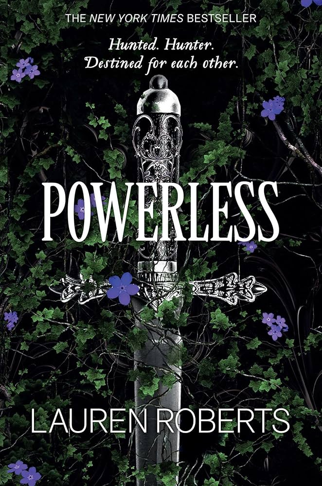
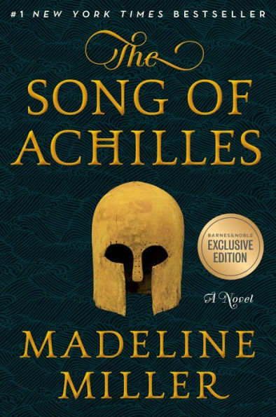
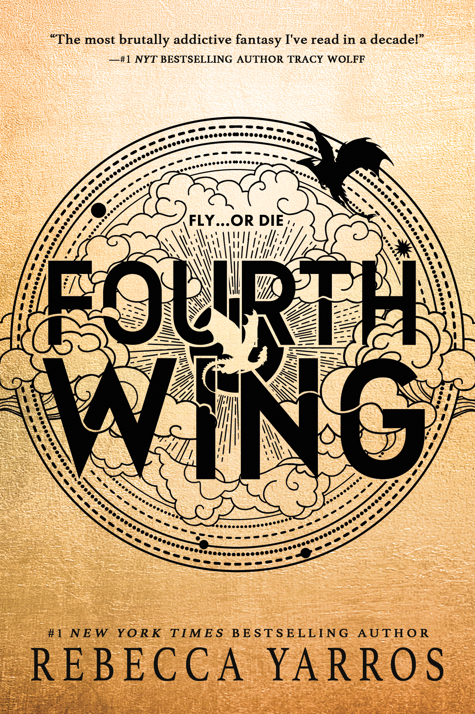

Powerless
Šta kada ti moć treba da bi preživela, a tvoja jedina moć je obmana? U kraljevini Iliji, kojom vladaju Eliti sa specijalnim
moćima koje im je doneo Pomor, Obične poput Pejdin Grej čeka samo jedna sudbina – smrt. Kako bi preživela, Pejdin
postaje kraljica obmane, vidovnjakinja, nevidljiva i neuhvatljiva kao senka. Ali kad slučajno naleti na princa Kaja i
potom bude izabrana za brutalne Ispite Pročišćenja, više ne može da se krije, a njena tajna postaje smrtno opasna. No
njena osećanja prema braći prinčevima možda se pokažu još opasnija. Nemoćna je uzbudljiv debitantski roman Loren
Roberts o tome kako preživeti i pronaći sebe u svetu gde su samo moć i predrasude sveprisutne. Upečatljivi likovi,
dinamična radnja i neočekivani preokreti čine ovu priču istinskom avanturom.

Shatter me
Džulijet nije nikoga dodirnula tačno 264 dana! Poslednji put kad je to uradila nehotice je izazvala nesreću, ali
Reuspostava ju je ipak zatvorila zbog ubistva. Niko ne zna zašto je Džulijetin dodir smrtonosan. Ali dogod nikoga ne
povređuje, nikoga nije ni briga. Svet je previše zauzet oporavljanjem od sopstvene propasti da bi obraćao pažnju na
jednu sedamnaestogodišnju devojku. Bolesti desetkuju stanovništvo, hranu je teško naći, ptice više ne lete, oblaci su
pogrešne boje... Reuspostava je Džulijet prvo bacila u ludnicu, pa se predomislila. Toliko je mrtvih unaokolo da se u
vazduhu već oseća dah pobune, a ona bi mogla biti njihovo rešenje? Možda ona nije samo jedna napaćena duša u
otrovnom telu. Možda im sada baš jedna takva treba? Džulijet mora da odluči: biti njihovo oružje, ili okrenuti oružje
protiv njih i postati borac!

The Song of Achilles
Grčka u doba junaka. Patroklo, stidljivi mladi princ, prognan je na dvor kojim vladaju kralj Pelej i
njegov savršeni sin Ahil. Pod uobičajenim okolnostima putevi im se svakako ne bi ukrstili; ipak, Ahil
sklapa prijateljstvo sa obeščašćenim kraljevićem. I dok izrastaju u mladiće vične ratnim i vidarskim
veštinama, njihovo drugarstvo prerasta u nešto dublje – uprkos protivljenju Ahilove majke Tetide,
surove morske boginje. Ubrzo stižu vesti da je oteta Helena, kraljica Sparte. Rastrzan između ljubavi i
strahovanja, Patroklo polazi sa Ahilom u Troju, i ne znajući da će godine koje će uslediti staviti na
probu sve do čega im je stalo.

Fourth Wing
Dvadesetjednogodišnja Vajolet Sorengejl trebalo je da uđe u Pisarski kvadrant, i vodi
miran život među knjigama i istorijom. No vrhovna zapovednica – takođe poznata i
kao njena nemilosrdna majka – naredila je Vajolet da se pridruži stotinama kandidata
koji žele da postanu elita navarske vojske: jahači zmajeva.
Ali kad si manji od svih ostalih i telo ti je krhko, smrt je na korak od tebe… jer zmajevi
se ne povezuju s „krhkim“ ljudima. Spaljuju ih. Sa sve manje zmajeva spremnih da se
povežu, mnogi bi ubili Vajolet samo da povećaju svoje izgleda za uspeh. Ostali bi je
ubili samo zbog njene majke… kao Zejden Riorson, najmoćniji i najsuroviji vodnik u Jahačkom kvadrantu.
Biće joj potrebna sva pamet da doživi naredni dan. A opet, sa svakim danom rat
napolju postaje sve smrtonosniji, štitovi kraljevstva popuštaju, a broj mrtvih raste.